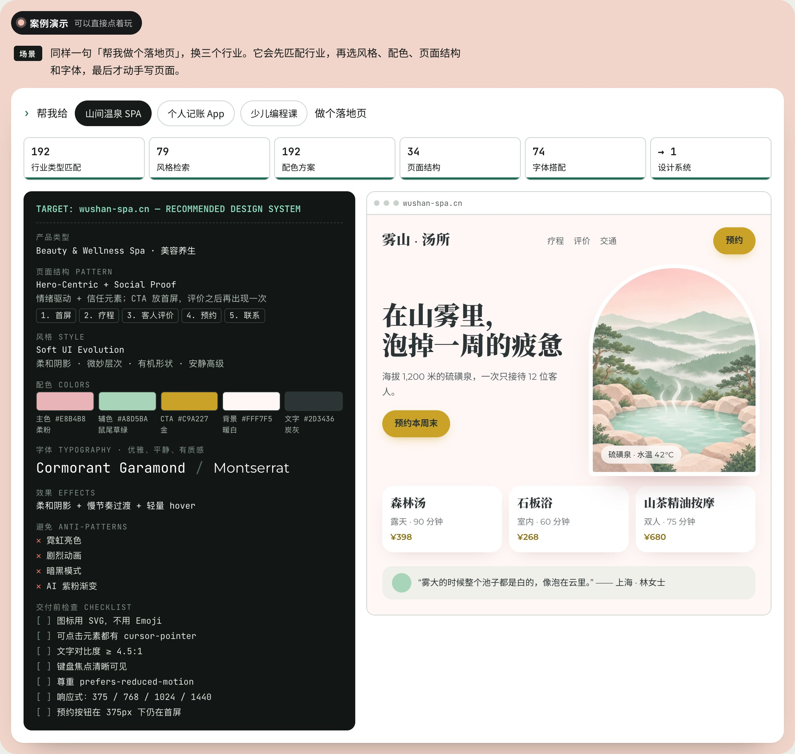
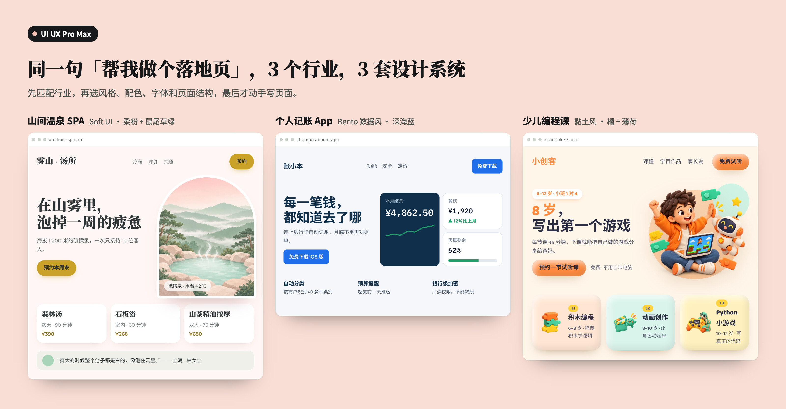

1 UI UX Pro Max
一句話需求，自動配出整套設計系統
能力
內置 192 條行業規則、79 種風格、192 套配色、74 組字體搭配、34 種落地頁結構，支持 22 種技術棧。
演示
同一句「幫我做個落地頁」，換成三個行業。它先匹配行業，再選出頁面結構、風格、配色和字體，列出要避免的做法和交付前檢查清單，最後才寫頁面。


怎麼用
npm install -g ui-ux-pro-max-cliuipro init --ai claude裝好後直接提需求，它會自動觸發：「幫我給山間溫泉 SPA 做一個落地頁，目標客戶是週末來放鬆的白領」。
適合
不知道該用什麼風格，想要穩妥、專業、符合行業習慣的結果。